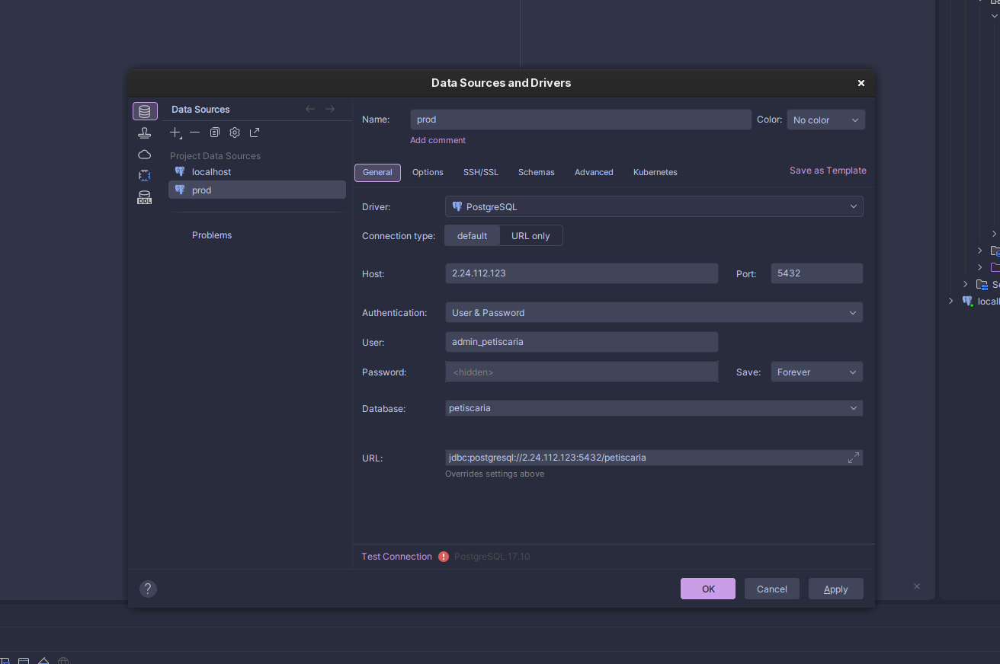

Carlos Drummond
de Andrade
Sumário
- 01 Introdução — quem foi Drummond pág. 03
- 02 Sessão 1 — Marcas da vida pág. 04
- 03 Sessão 2 — Sete faces do eu leitor pág. 06
- 04 Sessão 3 — A xícara de cacos pág. 08
- 05 Sessão 4 — Drummond nas redes pág. 10
- 06 Sessão 5 — Reportagem: povos indígenas pág. 12
- 07 Sessão 6 — Poemas em grupo pág. 15
- 08 Encerramento pág. 17
O poeta da circunstância
Carlos Drummond de Andrade nasceu em Itabira, Minas Gerais, em 1902, e morreu no Rio de Janeiro em 1987. É considerado um dos nomes centrais da poesia brasileira do século XX.
Sua obra atravessa fases distintas — da ironia inicial ao engajamento social, da introspecção madura à leveza dos últimos livros — mas mantém, do início ao fim, um olhar atento ao cotidiano, à passagem do tempo e às pequenas contradições de ser gente.
É chamado de "poeta da circunstância" porque transformava situações simples do dia a dia — um objeto quebrado, uma lembrança, uma rua — em reflexões sobre a existência. É esse gesto que as atividades a seguir convidam você a repetir, olhando para a própria vida e para o seu tempo.
Marcas da vida
Se cada fase importante da vida de Drummond fosse uma marca no corpo, qual seria? Uma cicatriz, uma tatuagem, um arranhão, uma pintura?
A trajetória do poeta foi atravessada por perdas, afetos, deslocamentos e uma reflexão constante sobre o tempo. Pense nessas fases como marcas visíveis — cada uma contando, à sua maneira, uma parte da história.
Produza uma imagem (com IA, Canva, Photoshop ou outra ferramenta) que represente essa marca — sua ou do poeta — explicando o que a causou e como ela apareceria se estivesse exposta.
Acompanhe a imagem de uma legenda curta ou de um texto reflexivo.
Espaço para o seu trabalho

imagens/sessao1.jpg
Sete faces do eu leitor
Nesse poema, Drummond descreve um "eu" que se sente fora de lugar — "gauche na vida" — e observa o mundo em fragmentos: pernas na rua, um bigode, a lua, um copo de conhaque. São várias faces de uma mesma pessoa, alternando ironia, espanto e ternura.
Assim como o eu do poema, você também tem várias "faces" como leitor — momentos diferentes que moldaram a sua relação com os livros.
Monte uma colagem em 7 partes (mapa mental) no Canva ou numa ferramenta de IA, representando 7 momentos da sua trajetória como leitor(a). Sugestões: primeiro livro, leitura marcante, leitura que mudou sua visão de mundo, um livro que te fez rir/chorar/pensar, leitura da infância, leitura recente, leitura que você recomendaria.
As sete faces


A xícara de cacos
Em poucos versos, Drummond descreve uma xícara feita de cacos colados — sem uso prático, mas guardada no aparador, observando a casa. É uma imagem da vida como algo remendado: pedaços quebrados que, juntos, formam algo novo e imperfeito, mas carregado de sentido.
A partir dos "cacos" da sua própria trajetória, crie a sua xícara — em Canva, colagem física digitalizada, ou outra ferramenta. Pense em: quais foram os principais cacos da sua trajetória? Como eles se encaixam para formar algo único? O que essa xícara revela sobre você hoje?
Espaço para a sua xícara

imagens/sessao3.jpg
Se Drummond tivesse uma rede social
Drummond escreveu sobre o crescimento das cidades e as transformações do seu tempo com um olhar atento e, às vezes, incomodado. Imagine que ele estivesse vivo hoje e quisesse comentar o crescimento acelerado das cidades — como seria esse post?
Desenhe o "quadrado" do post (a imagem que ele publicaria).
Escreva uma legenda curta, no estilo Drummond: simples e profunda.
Pense nas hashtags. Exemplos de inspiração: #SentimentoDoMundo #MinasNoRio #OuroNegro
Monte o post

Reportagem: povos indígenas
Em grupo, produzam uma reportagem que relacione o poema de Drummond ao tema indígena hoje. A reportagem deve trazer:
- um título;
- uma introdução relacionando o poema de Drummond ao tema indígena;
- informações sobre um intelectual indígena contemporâneo;
- uma seção especial sobre Cândido Rondon;
- imagens ou ilustrações;
- uma conclusão destacando a importância da valorização dos povos indígenas.
Perguntas para guiar a pesquisa
Usem estas perguntas para organizar o que precisam descobrir antes de escrever a reportagem:
- O que o poema de Drummond sugere sobre a forma como os povos indígenas eram vistos na época em que foi escrito?
- Quem é o intelectual indígena contemporâneo escolhido pelo grupo, e qual é a sua atuação hoje?
- Qual foi o papel histórico de Cândido Rondon — o que ele fez, e por que essa figura é vista de formas diferentes por historiadores?
- Que imagens ou ilustrações podem ajudar a contar essa história?
- Por que valorizar os povos indígenas é importante hoje?
Rascunho da reportagem

Poemas em grupo
A turma será dividida em 3 grupos. Cada grupo escreve um poema original, inspirado no olhar atento de Drummond, sobre um dos temas abaixo — e registra o resultado na página seguinte.
- Grupo 1 — mulheres e feminismo
- Grupo 2 — povos indígenas
- Grupo 3 — população negra
Os três poemas
Expediente
- Edição
- Atividade de leitura — Língua Portuguesa
- Sessões
- Marcas da vida · Sete faces · A xícara de cacos · Drummond nas redes · Reportagem indígena · Poemas em grupo
- Projeto gráfico
- Este flipbook — feito em HTML, CSS e JavaScript puro
cada caco tem seu lugar.
mundo mundo vasto mundo — o seu coração é mais vasto ainda.